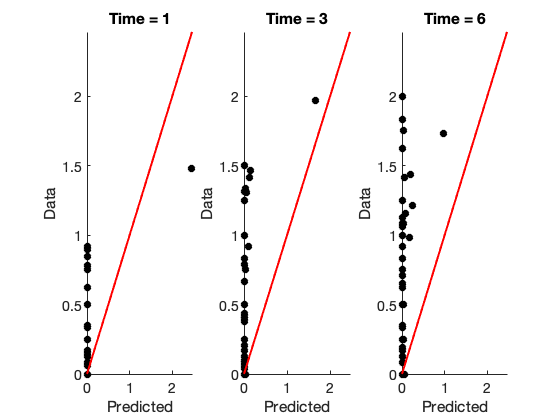
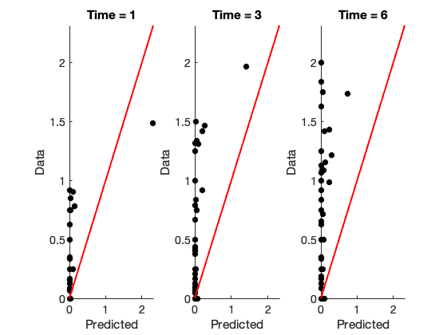
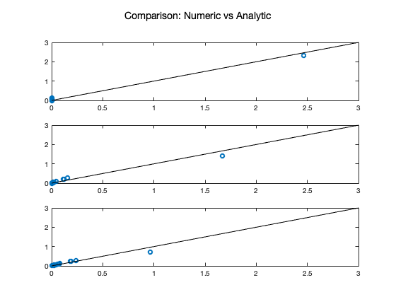
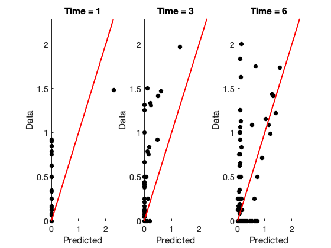
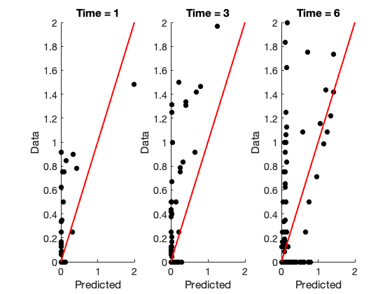
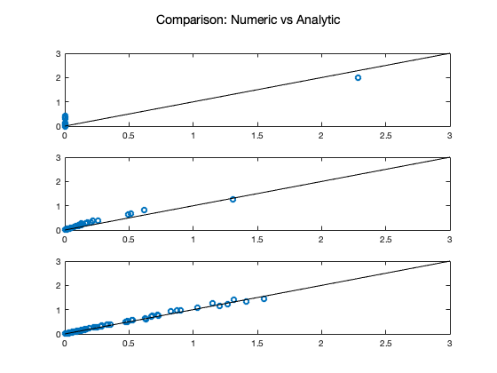
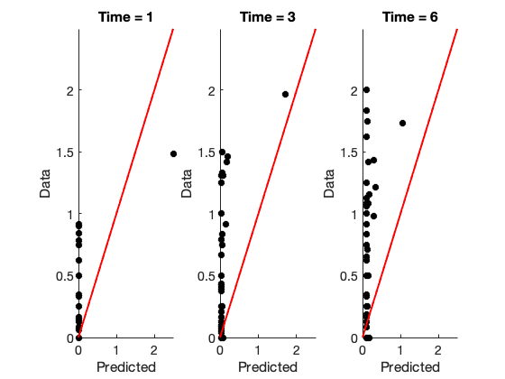

Demo [Analytics vs Numeric]
The goal of this demo is to apply eNDM to mouse data. Uses numerical solutions for models using ode solvers in objective functions. Several consistency checks are provided.
Written by: Pedro D. Maia
Created: Feb/6/2020
Last Modified: Feb/19/2020
Contents
- 0. Setup
- 1. [Analytics vs Numeric] NDM, fmincon minimizing MSE
- Display Numeric Results
- Display Analytic Results
- Compare values
- 2. [Analytics vs Numeric] NDMwS, fmincon minimizing MSE
- Display Numeric Results
- Display Analytic Results
- Compare values
- 3. [Numeric] NDMwC, fmincon minimizing MSE, no analytic counterpart
- Display Numeric Results
0. Setup
% Initialization clear all; close all; clc; % Add folder with raw data to path addpath([pwd '/raw_data_mouse']) % Add library with eNDM functions to path addpath([pwd '/lib_eNDM_numeric']) addpath([pwd '/lib_eNDM_analytic']) % Load dataset of interest load MouseDataForPedro.mat % Select connectome C (426x426) C = Networks.nd; % symmmetric %C = Networks.ret; % non-symmetric %C = Networks.ant; % non-symmetric % Normalize C cmax = max(max(C)); cmin = min(min(C)); C = (C - cmin)./(cmax-cmin); % Define number of regions of interest (nroi) nroi = size(C,1); % Load time stamps, pathology measurements, and the seed_location % Hippocampus Injection time_stamps = [1,3,6]; pathology = data426.IbaHippInj; seed_location = seed426.IbaHippInj; % Striatal Injection % time_stamps = [1,3,6]; % pathology = data426.IbaStrInj; % seed_location = seed426.IbaStrInj;
1. [Analytics vs Numeric] NDM, fmincon minimizing MSE
% Set ndm_comp = 1 to run ndm_comp = 1; if ndm_comp==1
% Parameters to fit % param(1) = beta % param(2) = x0_value % Extra input to required by objective function % seed_location % pathology % time_stamps % C % Set initial guess for beta init_guess_params(1) = 1; % Set initial guess for x0_value init_guess_params(2) = nansum(pathology(:,1)); % Set lower bounds (lb) for parameters lb = [0,0]; % Set upper bounds (ub) for parameters % ub = [10,nansum(pathology(:,1))]; ub = [3,3]; % Apply fmincon w/ numeric [param_num, fval_num] = fmincon(@(param)objfun_NDM_numeric(param,seed_location,pathology,time_stamps,C),... init_guess_params,[],[],[],[],lb,ub,[]); % Solve NDM with the optimal parameters beta_num = param_num(1); x0_num = seed_location*param_num(2); ynum = NDM_numeric(x0_num,time_stamps,C,beta_num); % Apply fmincon w/ analytic [param_ana, fval_ana] = fmincon(@(param)objfun_NDM_analytic(param,seed_location,pathology,time_stamps,C),... init_guess_params,[],[],[],[],lb,ub,[]); % Solve NDM with the optimal parameters beta_ana = param_ana(1); x0_ana = seed_location*param_ana(2); yana = NDM_analytic(x0_ana,time_stamps,C,beta_ana); %DEBUG %beta_ana = param_num(1); %x0_ana = seed_location*param_num(2); %yana = NDM_analytic(x0_ana,time_stamps,C,beta_ana);
Local minimum possible. Constraints satisfied. fmincon stopped because the size of the current step is less than the default value of the step size tolerance and constraints are satisfied to within the default value of the constraint tolerance. Local minimum found that satisfies the constraints. Optimization completed because the objective function is non-decreasing in feasible directions, to within the default value of the optimality tolerance, and constraints are satisfied to within the default value of the constraint tolerance.
Display Numeric Results
Save Rvalues in a matrix
for jj = 1:length(time_stamps) Rvalues(jj,:) = corr(ynum(:,jj),pathology(:,jj), 'rows','complete'); end % Display results disp('--------------------------------------------------') disp('NDM minimizing quadratic error at all time stamps with fmincon'); disp(' ') disp(['NUMERIC Beta = ' num2str(param_num(1)) ', x0 value = ' num2str(param_num(2))]) disp(' ') disp(['R values at each time stamp']) disp(Rvalues) disp(' ') disp('Square error') disp(fval_num) % Plot prediction vs data using optimal parameters plot_pred_vs_data(ynum,pathology,time_stamps)
--------------------------------------------------
NDM minimizing quadratic error at all time stamps with fmincon
NUMERIC Beta = 0.32422, x0 value = 2.4629
R values at each time stamp
0.5415
0.4776
0.4166
Square error
59.1826
 Display Analytic Results
Save Rvalues in a matrix
for jj = 1:length(time_stamps) Rvalues(jj,:) = corr(yana(:,jj),pathology(:,jj), 'rows','complete'); end % Display results disp('--------------------------------------------------') disp('NDM minimizing quadratic error at all time stamps with fmincon'); disp(' ') disp(['ANALYTIC Beta = ' num2str(param_ana(1)) ', x0 value = ' num2str(param_ana(2))]) disp(' ') disp(['R values at each time stamp']) disp(Rvalues) disp(' ') disp('Square error') disp(fval_ana) % Plot prediction vs data using optimal parameters plot_pred_vs_data(yana,pathology,time_stamps) clearvars y
--------------------------------------------------
NDM minimizing quadratic error at all time stamps with fmincon
ANALYTIC Beta = 0.42779, x0 value = 3
R values at each time stamp
0.5851
0.5516
0.4866
Square error
57.2228
 Compare values
%table(ynum,yana) figure subplot(3,1,1) plot(ynum(:,1),yana(:,1),'o') hold on line([0 3], [0 3],'Color','k') % subplot(3,1,2) plot(ynum(:,2),yana(:,2),'o') hold on line([0 3], [0 3],'Color','k') % subplot(3,1,3) plot(ynum(:,3),yana(:,3),'o') hold on line([0 3], [0 3],'Color','k') % suptitle('Comparison: Numeric vs Analytic') disp('rel error at t1') disp( norm(ynum(:,1)-yana(:,1),2) /norm(ynum(:,1),2) ) disp('rel error at t2') disp( norm(ynum(:,2)-yana(:,2),2) /norm(ynum(:,2),2) ) disp('rel error at t3') disp( norm(ynum(:,3)-yana(:,3),2) /norm(ynum(:,3),2) )
rel error at t1
0.1072
rel error at t2
0.1900
rel error at t3
0.2581
 end
2. [Analytics vs Numeric] NDMwS, fmincon minimizing MSE
% Set ndmws_comp = 1 to run ndmws_comp = 1; if ndmws_comp ==1
% Parameters to fit % param(1) = beta % param(2) = x0_value % param(3) = alpha1 = linear growth/clearance term in x % Extra input to required by objective function % seed_location % pathology % time_stamps % C % Set initial guess for beta init_guess_params(1) = 1; % Set initial guess for x0_value init_guess_params(2) = nansum(pathology(:,1)); % Set initial guess for alpha1 and alpha2 init_guess_params(3) = .5; % Set lower bounds (lb) for parameters lb = [0,0,-5]; % Set upper bounds (ub) for parameters % ub = [10,nansum(pathology(:,end)),5]; ub = [3,3,3]; % Apply fmincon w/ numeric [param_num, fval_num] = fmincon(@(param)objfun_NDMwS_numeric(param,seed_location,pathology,time_stamps,C),... init_guess_params,[],[],[],[],lb,ub,[]); % Solve NDMwS with the optimal parameters beta_num = param_num(1); x0_num = seed_location*param_num(2); alpha1_num = param_num(3); ynum = NDMwS_numeric(x0_num,time_stamps,C,beta_num,alpha1_num); % Apply fmincon w/ analytic [param_ana, fval_ana] = fmincon(@(param)objfun_NDMwS_analytic(param,seed_location,pathology,time_stamps,C),... init_guess_params,[],[],[],[],lb,ub,[]); % Solve NDMwS with the optimal parameters beta_ana = param_ana(1); x0_ana = seed_location*param_ana(2); alpha1_ana = param_ana(3); yana = NDMwS_analytic(x0_ana,time_stamps,C,beta_ana,alpha1_ana); %DEBUG %beta_ana = param_num(1); %x0_ana = seed_location*param_num(2); %yana = NDM_analytic(x0_ana,time_stamps,C,beta_ana);
Local minimum possible. Constraints satisfied. fmincon stopped because the size of the current step is less than the default value of the step size tolerance and constraints are satisfied to within the default value of the constraint tolerance. Local minimum found that satisfies the constraints. Optimization completed because the objective function is non-decreasing in feasible directions, to within the default value of the optimality tolerance, and constraints are satisfied to within the default value of the constraint tolerance.
Display Numeric Results
Save Rvalues in a matrix
for jj = 1:length(time_stamps) Rvalues(jj,:) = corr(ynum(:,jj),pathology(:,jj), 'rows','complete'); end % Display results disp('--------------------------------------------------') disp('NDMwS minimizing quadratic error at all time stamps with fmincon'); disp(' ') disp(['NUMERIC Beta = ' num2str(param_num(1)) ', x0 value = ' num2str(param_num(2)) ... ', alpha1 = ' num2str(param_num(3))]) disp(' ') disp(['R values at each time stamp']) disp(Rvalues) disp(' ') disp('Square error') disp(fval_num) % Plot prediction vs data using optimal parameters plot_pred_vs_data(ynum,pathology,time_stamps)
--------------------------------------------------
NDMwS minimizing quadratic error at all time stamps with fmincon
NUMERIC Beta = 1.5128, x0 value = 2.2857, alpha1 = 0.53475
R values at each time stamp
0.5415
0.7023
0.5911
Square error
43.9155
 Display Analytic Results
Save Rvalues in a matrix
for jj = 1:length(time_stamps) Rvalues(jj,:) = corr(yana(:,jj),pathology(:,jj), 'rows','complete'); end % Display results disp('--------------------------------------------------') disp('NDMwS minimizing quadratic error at all time stamps with fmincon'); disp(' ') disp(['ANALYTIC Beta = ' num2str(param_ana(1)) ', x0 value = ' num2str(param_ana(2)) ... ', alpha1 = ' num2str(param_ana(3))]) disp(' ') disp(['R values at each time stamp']) disp(Rvalues) disp(' ') disp('Square error') disp(fval_ana) % Plot prediction vs data using optimal parameters plot_pred_vs_data(yana,pathology,time_stamps) clearvars y
--------------------------------------------------
NDMwS minimizing quadratic error at all time stamps with fmincon
ANALYTIC Beta = 1.4161, x0 value = 3, alpha1 = 0.41649
R values at each time stamp
0.6798
0.7469
0.5890
Square error
40.0727
 Compare values
%table(ynum,yana) figure subplot(3,1,1) plot(ynum(:,1),yana(:,1),'o') hold on line([0 3], [0 3],'Color','k') % subplot(3,1,2) plot(ynum(:,2),yana(:,2),'o') hold on line([0 3], [0 3],'Color','k') % subplot(3,1,3) plot(ynum(:,3),yana(:,3),'o') hold on line([0 3], [0 3],'Color','k') % suptitle('Comparison: Numeric vs Analytic') disp('rel error at t1') disp( norm(ynum(:,1)-yana(:,1),2) /norm(ynum(:,1),2) ) disp('rel error at t2') disp( norm(ynum(:,2)-yana(:,2),2) /norm(ynum(:,2),2) ) disp('rel error at t3') disp( norm(ynum(:,3)-yana(:,3),2) /norm(ynum(:,3),2) ) table(ynum,yana)
rel error at t1
0.3286
rel error at t2
0.3223
rel error at t3
0.0810
ans =
426×2 table
ynum yana
__________________________________ ______________________________________
0 0.0020308 0.039729 0.00033375 0.0056007 0.050215
0 0.01262 0.1013 0.004237 0.025203 0.11411
0 0.0069717 0.08913 0.0015194 0.016585 0.1062
0 0.0022583 0.037707 0.00043069 0.0058465 0.046852
0 0.0037108 0.066407 0.00061237 0.010056 0.082051
0 0.014534 0.12564 0.0052721 0.02909 0.14462
0 0.00075822 0.016169 0.00012617 0.0021257 0.020869
0 0.003525 0.049175 0.00075463 0.0085606 0.059739
0 0.0028585 0.050071 0.00053365 0.0075202 0.062563
0 0.0067207 0.089243 0.0014523 0.016154 0.10702
0 0.020894 0.14751 0.0086588 0.038867 0.16554
0 1.9977e-05 0.0011665 1.5076e-06 8.1076e-05 0.0017084
0 7.7508e-06 0.00039944 6.4396e-07 2.9887e-05 0.00057988
0 8.801e-06 0.00044416 7.5882e-07 3.3475e-05 0.00064582
0 2.1455e-06 0.00016015 1.4704e-07 9.3483e-06 0.00024524
0 2.4719e-05 0.00094529 2.8879e-06 8.4117e-05 0.0013334
0 1.9615e-05 0.00069281 2.8288e-06 6.3062e-05 0.00098369
0 0.00042583 0.0046369 0.00010401 0.00095005 0.0054726
0 4.2752e-07 2.8015e-05 3.1739e-08 1.7765e-06 4.228e-05
0 9.2907e-06 0.00057816 6.8566e-07 3.8354e-05 0.00085799
0 0.00011143 0.0044947 1.2572e-05 0.00039101 0.0062967
0 5.8639e-06 0.00039258 4.0179e-07 2.4949e-05 0.00058713
0 2.0415e-05 0.0011652 1.5638e-06 8.2171e-05 0.0017029
0 0.0058827 0.068144 0.0013255 0.013609 0.079862
0 0.011119 0.12449 0.0024925 0.025622 0.14418
0 0.01007 0.1233 0.0022219 0.023702 0.1455
0 0.25622 1.0307 0.14144 0.3966 1.0623
2.2857 1.3113 1.5542 1.9925 1.2522 1.4274
0 0.22113 1.3154 0.093432 0.39662 1.4154
0 0.51313 1.2691 0.33557 0.68982 1.2145
0 0.083455 0.53206 0.028959 0.15835 0.56661
0 0.20413 0.6295 0.12145 0.29402 0.62161
0 0.045031 0.33041 0.017767 0.085445 0.37068
0 0.011323 0.15743 0.0023957 0.027625 0.18992
0 0.008862 0.11399 0.0019221 0.021169 0.1355
0 0.075459 0.28682 0.041787 0.11453 0.29638
0 0.12262 0.67403 0.052934 0.21554 0.71406
0 0.0054865 0.076981 0.0011609 0.013404 0.093164
0 0.00018638 0.0071213 1.8837e-05 0.00065299 0.009833
0 0.0010603 0.018289 0.00020687 0.0027459 0.023024
0 0.0085493 0.094258 0.0019728 0.01953 0.10914
0 0.0072294 0.10479 0.001478 0.017963 0.12663
0 0.0052175 0.043348 0.0020149 0.010164 0.050214
0 0.045247 0.35278 0.017649 0.087201 0.4001
0 0.00023112 0.0045528 4.175e-05 0.00062649 0.0058379
0 0.0032162 0.050949 0.00064642 0.0081479 0.062943
0 0.011583 0.10582 0.004196 0.023463 0.12309
0 0.00022657 0.0037287 4.5691e-05 0.00057621 0.0046748
0 0.0019754 0.030286 0.0004054 0.0049423 0.037321
0 0.0012342 0.022256 0.00023213 0.0032583 0.028083
0 5.4419e-06 0.00024491 4.8519e-07 2.0083e-05 0.00034825
0 0.0012176 0.018572 0.00025745 0.0030132 0.023063
0 0.00041295 0.0060052 8.7914e-05 0.0010114 0.0073786
0 0.0002313 0.0080087 2.7118e-05 0.00077573 0.010947
0 0.0045307 0.043665 0.0016564 0.0092231 0.051797
0 0.002641 0.042551 0.00052557 0.0067309 0.052671
0 0.00053616 0.009823 0.0001053 0.0014001 0.012593
0 0.0036107 0.046089 0.00078742 0.0085635 0.055093
0 0.0048275 0.045872 0.0019534 0.0095872 0.054806
0 0.0016452 0.032188 0.00025865 0.0045857 0.040362
0 0.0028011 0.045786 0.00049674 0.0073252 0.056111
0 0.0043257 0.066727 0.00073504 0.011303 0.080039
0 0.0038265 0.04126 0.00093981 0.0085033 0.048596
0 0.0020017 0.029358 0.00041711 0.0049399 0.035962
0 0.0035829 0.039924 0.00086572 0.0080454 0.047245
0 0.0070643 0.076578 0.0016516 0.015991 0.088844
0 0.0011263 0.025927 0.00014565 0.0033594 0.033056
0 0.0020695 0.031932 0.00040563 0.0052327 0.039198
0 0.0084104 0.077083 0.0029688 0.01716 0.0894
0 0.002483 0.031242 0.00060032 0.0057259 0.037833
0 0.0037842 0.042686 0.00093098 0.0084789 0.050702
0 0.0015297 0.030946 0.0002433 0.0042966 0.039033
0 0.0018609 0.036703 0.00031169 0.0051515 0.04627
0 0.0016819 0.032441 0.00028379 0.0046149 0.040838
0 0.011298 0.099814 0.0028812 0.023997 0.1124
0 0.0018426 0.033828 0.00033829 0.0049182 0.042552
0 0.0060474 0.049562 0.0025596 0.011524 0.057802
0 0.004591 0.045313 0.0016829 0.0093883 0.054023
0 0.0024826 0.04227 0.00045275 0.0065505 0.052082
0 0.0089007 0.086675 0.0022034 0.01945 0.099041
0 0.0057574 0.041858 0.002406 0.010566 0.04835
0 0.0012541 0.024383 0.00020834 0.0034549 0.030752
0 0.0012652 0.023562 0.00022275 0.003409 0.029675
0 0.00053029 0.012683 8.5999e-05 0.0015345 0.016679
0 0.0030005 0.037668 0.00066852 0.0070482 0.04512
0 0.0018759 0.028343 0.00036566 0.0047035 0.034804
0 0.003855 0.031141 0.0019498 0.006995 0.037158
0 0.004175 0.049879 0.00093305 0.0097235 0.058928
0 0.00083531 0.018271 0.00013364 0.0023742 0.023568
0 0.0029922 0.044697 0.00059964 0.0075027 0.054384
0 0.0038422 0.051536 0.00082256 0.0092772 0.061833
0 0.0064445 0.06461 0.0020675 0.013636 0.075758
0 0.012556 0.086454 0.0053741 0.023023 0.097192
0 0.001914 0.031282 0.00038072 0.0048848 0.038948
0 0.0013096 0.023356 0.00024982 0.0034388 0.029438
0 1.6204e-06 0.00012858 1.0293e-07 7.2568e-06 0.00019789
0 1.5481e-05 0.00085107 1.1999e-06 6.1587e-05 0.0012374
0 0.000188 0.0056128 2.4855e-05 0.00059519 0.0075524
0 0.00035717 0.006671 6.6654e-05 0.0009508 0.0084852
0 0.0001906 0.0054561 2.7422e-05 0.00058867 0.0073423
0 1.2782e-05 0.00067757 9.9704e-07 5.0377e-05 0.00097849
0 2.2888e-05 0.00095253 2.6254e-06 8.0574e-05 0.0013493
0 0.00010769 0.0033995 1.5419e-05 0.00033943 0.0046814
0 4.654e-05 0.0011081 8.7334e-06 0.00012943 0.0014995
0 4.3188e-05 0.0019165 3.9544e-06 0.00015805 0.002723
0 2.0408e-05 0.00083031 2.453e-06 7.0672e-05 0.0011792
0 3.9114e-05 0.0018771 3.7532e-06 0.00014626 0.0026953
0 0.0001307 0.0042267 1.7096e-05 0.00042148 0.0057865
0 1.9869e-05 0.0010099 1.6276e-06 7.6847e-05 0.0014533
0 9.1534e-05 0.0036328 1.0032e-05 0.00032085 0.0050726
0 1.7986e-06 0.00013127 1.2199e-07 7.8161e-06 0.00019973
0 6.052e-05 0.0024129 6.9454e-06 0.00021048 0.0033923
0 2.0237e-06 0.00015709 1.3281e-07 8.9641e-06 0.00024148
0 5.9167e-05 0.0013772 1.1838e-05 0.00016085 0.0018785
0 0.00011452 0.0031196 2.0073e-05 0.00033493 0.0042677
0 4.9013e-05 0.0017231 7.3816e-06 0.00015664 0.0024396
0 2.2258e-05 0.0010013 2.3524e-06 8.0709e-05 0.0014329
0 8.7604e-06 0.00060962 5.9595e-07 3.7705e-05 0.00091653
0 3.2784e-05 0.0012145 4.3958e-06 0.00010837 0.0017196
0 3.5028e-06 0.00021831 2.8326e-07 1.4146e-05 0.00032912
0 0.00054862 0.013142 8.5036e-05 0.0016055 0.017176
0 0.0017059 0.032975 0.00030281 0.0046391 0.041767
0 0.00010769 0.0043175 1.0878e-05 0.00038241 0.0060106
0 2.0131e-05 0.00095432 1.6863e-06 7.6381e-05 0.0013552
0 9.0614e-05 0.0032551 1.0699e-05 0.00030438 0.0045179
0 0.00010466 0.0040218 1.1164e-05 0.00036388 0.0055928
0 0.00061002 0.0142 9.3897e-05 0.0017837 0.01835
0 0.019772 0.1514 0.0082 0.037234 0.17398
0 0.00015403 0.0042553 2.3332e-05 0.00046664 0.0057286
0 0.0012793 0.023067 0.00021566 0.003453 0.028727
0 0.00023577 0.0057316 3.9027e-05 0.00068088 0.0076071
0 0.0001687 0.0051509 2.2039e-05 0.00053669 0.0069777
0 0.0020152 0.03172 0.0003831 0.0051707 0.038793
0 0.0007844 0.016848 0.00013377 0.0021991 0.021744
0 0.00027825 0.0082086 3.1836e-05 0.00089693 0.010909
0 0.00036751 0.011144 4.0787e-05 0.0011994 0.014831
0 0.0015274 0.024444 0.00028821 0.0039224 0.030127
0 0.0031777 0.027442 0.0013167 0.0061148 0.032513
0 0.00046473 0.013019 5.4907e-05 0.0014689 0.017189
0 0.0005293 0.014176 6.8145e-05 0.0016319 0.018692
0 0.0011013 0.026239 0.00016208 0.0032611 0.033913
0 0.00050455 0.012808 7.227e-05 0.0015096 0.016901
0 0.010095 0.098534 0.0033938 0.02117 0.1149
0 0.0015714 0.029251 0.00027858 0.0042298 0.036869
0 0.0048493 0.076023 0.00089461 0.012508 0.092401
0 0.0013935 0.027108 0.00023617 0.0038098 0.034426
0 0.019214 0.13363 0.0061705 0.036548 0.14868
0 0.0085081 0.10394 0.0018772 0.02 0.12278
0 0.012947 0.13443 0.0037455 0.028428 0.15536
0 0.0038738 0.057838 0.00078432 0.0096873 0.070481
0 0.0005996 0.015822 7.9716e-05 0.0018412 0.020776
0 0.0023229 0.030024 0.0005202 0.005485 0.036211
0 0.0013369 0.031222 0.00019386 0.0039288 0.040363
0 0.10661 0.67915 0.044446 0.19424 0.74242
0 0.095617 0.48846 0.044771 0.16214 0.51672
0 0.0045645 0.06808 0.00086565 0.011598 0.081998
0 0.037981 0.28326 0.015715 0.071235 0.32307
0 0.014492 0.11206 0.0055503 0.02792 0.12718
0 0.00046921 0.0098884 8.1787e-05 0.0013015 0.012784
0 0.00023676 0.0074102 3.1646e-05 0.00075917 0.010039
0 0.00012502 0.0047901 1.2265e-05 0.00043994 0.0066071
0 0.00076182 0.015422 0.0001357 0.0020868 0.019793
0 0.00027601 0.0061461 4.3844e-05 0.00078994 0.0079472
0 0.00039573 0.010495 5.6301e-05 0.001208 0.013828
0 0.00049857 0.012282 7.4934e-05 0.0014785 0.016065
0 0.00018498 0.0046082 3.132e-05 0.00053476 0.0061594
0 0.00015022 0.0045978 2.0953e-05 0.0004741 0.0062518
0 8.2182e-06 0.00035853 7.7739e-07 2.966e-05 0.00051214
0 0.00023757 0.0059058 3.7042e-05 0.00069885 0.0078041
0 6.2832e-05 0.0016878 9.7052e-06 0.00018759 0.0022786
0 0.020561 0.15873 0.0055541 0.042023 0.17427
0 0.0040634 0.041764 0.0011943 0.0086603 0.049433
0 0.00095456 0.018827 0.00016247 0.0026152 0.024002
0 0.13633 0.87474 0.060082 0.24453 0.97183
0 0.16087 0.72714 0.078986 0.26352 0.75139
0 1.9504e-05 0.00065637 1.9758e-06 6.5868e-05 0.00089006
0 0.009145 0.10865 0.0019247 0.021608 0.12661
0 0.033039 0.24065 0.01382 0.061474 0.2738
0 0.0064863 0.058974 0.0025171 0.012841 0.069826
0 0.0021986 0.03708 0.00041817 0.0057158 0.046087
0 0.00043383 0.0075515 8.5404e-05 0.0011225 0.0095499
0 0.0025428 0.039487 0.00051747 0.0063907 0.048745
0 0.00035308 0.0096291 4.7831e-05 0.0010892 0.012772
0 0.00034261 0.0099748 4.3781e-05 0.0010805 0.013356
0 0.00064804 0.018676 7.0269e-05 0.0020991 0.024521
0 0.019941 0.13108 0.0087791 0.035918 0.14663
0 0.026907 0.17237 0.011056 0.04919 0.18877
0 0.0055356 0.041039 0.0022882 0.010345 0.046982
0 0.00026496 0.0069491 3.9956e-05 0.00079492 0.0092382
0 0.0012971 0.026673 0.00021232 0.0036379 0.033862
0 0.00097627 0.02435 0.00013288 0.0029562 0.031569
0 0.00030139 0.0095546 3.4406e-05 0.00099127 0.012844
0 5.9442e-05 0.00185 7.6968e-06 0.00018999 0.0025203
0 0.00070088 0.013613 0.00012915 0.0018851 0.017445
0 0.00063657 0.014896 0.00010332 0.0018336 0.019507
0 0.00034428 0.010049 4.3548e-05 0.0010869 0.013461
0 0.00095913 0.020016 0.00015992 0.0026818 0.025633
0 0.00014128 0.0043245 1.8011e-05 0.00045134 0.0058523
0 0.00064304 0.01403 0.00011021 0.0018038 0.018227
0 0.0034497 0.052652 0.00069897 0.0086566 0.064595
0 7.3479e-05 0.002802 8.3549e-06 0.00025276 0.0039076
0 0.0099022 0.11906 0.0022017 0.023203 0.13984
0 0.00047533 0.0087326 8.9412e-05 0.0012579 0.011093
0 0.0012299 0.023349 0.00022245 0.0033144 0.029584
0 0.00028451 0.0086543 3.5456e-05 0.0009115 0.011657
0 4.4918e-05 0.0018318 4.4674e-06 0.00015974 0.0025682
0 4.848e-05 0.0017196 5.1581e-06 0.00016472 0.0023628
0 0.00032147 0.0096193 4.1282e-05 0.0010234 0.012917
0 0.0007917 0.019596 0.00010489 0.0023968 0.025382
0 0.00057727 0.015942 7.3082e-05 0.0018074 0.021013
0 0.0008108 0.017053 0.00013556 0.0022641 0.021949
0 0.00061782 0.012892 0.00011285 0.0016894 0.016767
0 9.5137e-05 0.0031712 1.3552e-05 0.00030475 0.0044024
0 0.0011126 0.028614 0.00013546 0.0034392 0.037169
0 0.0077387 0.083154 0.0017611 0.017571 0.096089
0 0.0041644 0.064853 0.00078254 0.010661 0.07915
0 0.0013592 0.028853 0.00019661 0.0038947 0.036706
0 0.001999 0.04755 0.00024637 0.0060842 0.060516
0 0.0063951 0.086547 0.0013046 0.015616 0.10355
0 0.00047036 0.012503 5.9568e-05 0.001451 0.016468
0 0.0022536 0.037264 0.00041396 0.0058493 0.046157
0 0.001401 0.034053 0.00019064 0.0042119 0.043992
0 0.0037141 0.061964 0.0006698 0.0097372 0.076289
0 0.0082271 0.099808 0.0018088 0.019343 0.11753
0 2.1202e-05 0.0012224 1.5937e-06 8.5857e-05 0.0017851
0 7.7621e-06 0.0004033 6.3964e-07 3.0043e-05 0.00058571
0 1.2075e-05 0.00048655 1.5515e-06 4.1048e-05 0.00069753
0 2.5165e-06 0.00017913 1.7251e-07 1.0837e-05 0.00027195
0 5.4487e-05 0.001237 1.0051e-05 0.00015009 0.0016615
0 3.4182e-05 0.00091196 5.8569e-06 9.9077e-05 0.0012548
0 0.0024735 0.014522 0.001166 0.0042752 0.016065
0 4.4813e-07 2.9033e-05 3.3363e-08 1.8564e-06 4.3725e-05
0 9.6979e-06 0.00059939 7.0963e-07 4.0033e-05 0.00088758
0 0.0001353 0.0051087 1.5676e-05 0.0004653 0.0070849
0 6.3242e-06 0.00040957 4.4243e-07 2.6588e-05 0.00061005
0 2.5028e-05 0.0013124 2.1675e-06 9.7347e-05 0.0018997
0 0.0036114 0.054608 0.00061808 0.009322 0.065733
0 0.0065256 0.094703 0.0011375 0.016689 0.11276
0 0.005619 0.089046 0.00095942 0.014686 0.10795
0 0.12785 0.90009 0.035331 0.25638 0.96131
0 0.61597 1.4137 0.42007 0.80665 1.3411
0 0.17352 1.1483 0.06682 0.32474 1.2496
0 0.49127 1.2096 0.32355 0.65828 1.1589
0 0.071735 0.47549 0.023961 0.1381 0.50923
0 0.1051 0.48418 0.047199 0.1762 0.4987
0 0.016315 0.19037 0.0037204 0.037756 0.2231
0 0.01379 0.15037 0.0047912 0.02938 0.18005
0 0.0066577 0.095101 0.0013498 0.016507 0.11458
0 0.054237 0.25152 0.022689 0.090184 0.26393
0 0.069545 0.52519 0.021818 0.13936 0.57415
0 0.0032813 0.055789 0.00061224 0.0085955 0.069111
0 0.00012605 0.0055845 1.1274e-05 0.00046694 0.0078465
0 0.00072104 0.014661 0.000126 0.0019842 0.018815
0 0.0054357 0.075126 0.0010781 0.013495 0.089287
0 0.0049765 0.082841 0.0009327 0.012988 0.1019
0 0.0019327 0.024178 0.00043987 0.0045207 0.028979
0 0.030248 0.28669 0.0098789 0.063147 0.33142
0 0.00017041 0.0035525 3.0291e-05 0.0004693 0.0046005
0 0.002113 0.039509 0.00038 0.0056893 0.049777
0 0.0078266 0.088474 0.0022938 0.017347 0.10493
0 0.00011476 0.0024927 1.866e-05 0.00032507 0.0032188
0 0.0014162 0.024479 0.00026912 0.0037004 0.030605
0 0.0013287 0.023494 0.00025171 0.0034882 0.029546
0 3.2138e-06 0.00017329 2.5416e-07 1.2655e-05 0.00025211
0 0.00082966 0.014734 0.00016143 0.0021625 0.01867
0 0.00021892 0.0039439 4.054e-05 0.00057954 0.0049726
0 0.00019516 0.0071339 2.2726e-05 0.0006645 0.0098396
0 0.0017525 0.027158 0.00035853 0.004397 0.033539
0 0.0019064 0.035283 0.00034512 0.0051149 0.044386
0 0.0002326 0.0059582 3.5978e-05 0.00068899 0.0079347
0 0.0028409 0.041631 0.00054234 0.0071368 0.050405
0 0.0022152 0.03733 0.0004179 0.0057635 0.046333
0 0.0013755 0.029954 0.00018868 0.0040216 0.037899
0 0.0018872 0.037628 0.00027485 0.0053507 0.04707
0 0.0027904 0.054181 0.00039003 0.0079693 0.066665
0 0.00334 0.038055 0.00079242 0.0075633 0.045169
0 0.0016425 0.026191 0.00031678 0.0041877 0.032402
0 0.0044731 0.038256 0.0019067 0.0085795 0.04512
0 0.0052768 0.065641 0.0010951 0.012599 0.077365
0 0.001005 0.024568 0.00012369 0.0030678 0.031533
0 0.0014425 0.027971 0.00021797 0.0040259 0.035022
0 0.004698 0.06305 0.00098065 0.011418 0.075295
0 0.0023674 0.030339 0.00057994 0.0054804 0.036857
0 0.0034167 0.040619 0.0008033 0.0078129 0.048524
0 0.0011356 0.027339 0.00015069 0.0034288 0.035064
0 0.0012854 0.030872 0.00017473 0.0038596 0.039697
0 0.0012341 0.02846 0.00017098 0.003653 0.036427
0 0.0085283 0.088019 0.0019022 0.019269 0.10068
0 0.001452 0.02975 0.00024321 0.0040413 0.037905
0 0.0044706 0.043828 0.0015894 0.0092141 0.051886
0 0.002 0.031505 0.00040919 0.0050272 0.039105
0 0.0016798 0.035879 0.0002413 0.0048742 0.045163
0 0.0061242 0.073674 0.0012932 0.014528 0.08601
0 0.006185 0.040514 0.0032477 0.010629 0.046799
0 0.0011122 0.022655 0.00017968 0.0031112 0.028771
0 0.0012334 0.022973 0.00022171 0.0033107 0.028991
0 0.00048997 0.012022 7.9397e-05 0.0014268 0.015886
0 0.0025848 0.034407 0.00056281 0.0061805 0.041588
0 0.0018978 0.027606 0.00040202 0.0046449 0.033923
0 0.0038271 0.029725 0.0020272 0.0067651 0.035567
0 0.0030133 0.043563 0.00055243 0.0076022 0.052391
0 0.00085219 0.018076 0.00014353 0.0023821 0.023298
0 0.0019581 0.036859 0.00031412 0.0053969 0.045887
0 0.0024044 0.042528 0.00039673 0.0065099 0.052348
0 0.0034669 0.050163 0.00069692 0.0086158 0.060738
0 0.00714 0.072061 0.0017455 0.015725 0.083102
0 0.001072 0.023246 0.00015999 0.0030749 0.02976
0 0.00067261 0.016873 9.1979e-05 0.0020321 0.02199
0 1.6181e-06 0.00012796 1.036e-07 7.2308e-06 0.00019696
0 1.5578e-05 0.00085597 1.2087e-06 6.1955e-05 0.0012444
0 0.00018707 0.0055987 2.4181e-05 0.00059402 0.007531
0 0.0003272 0.0062904 6.0062e-05 0.00087956 0.0080338
0 0.00017822 0.0053525 2.3435e-05 0.0005643 0.0072227
0 1.2025e-05 0.00064785 9.3926e-07 4.7572e-05 0.00093845
0 2.7033e-05 0.0010607 2.9945e-06 9.3872e-05 0.0014877
0 0.00010904 0.0034153 1.559e-05 0.00034286 0.004699
0 4.017e-05 0.001105 6.3884e-06 0.00011961 0.0015079
0 4.2048e-05 0.0018829 3.8086e-06 0.00015444 0.0026782
0 2.1447e-05 0.00085747 2.5656e-06 7.4017e-05 0.0012135
0 3.9954e-05 0.001908 3.7742e-06 0.00014956 0.0027346
0 0.0001249 0.0041276 1.6146e-05 0.00040593 0.0056657
0 1.9824e-05 0.0010105 1.6128e-06 7.6802e-05 0.0014542
0 9.4021e-05 0.003736 9.7781e-06 0.00033155 0.0052057
0 1.6949e-06 0.00012802 1.1105e-07 7.4737e-06 0.00019538
0 5.9529e-05 0.0024406 6.3079e-06 0.00021069 0.0034322
0 1.8952e-06 0.00015372 1.1856e-07 8.5576e-06 0.00023717
0 5.0798e-05 0.0013883 8.333e-06 0.00014942 0.0019081
0 0.0001221 0.0034284 1.9133e-05 0.00036757 0.0046647
0 5.1986e-05 0.0018121 7.4841e-06 0.00016706 0.0025533
0 2.0388e-05 0.00094211 2.1698e-06 7.4344e-05 0.0013552
0 1.2641e-05 0.00069663 1.2519e-06 4.8716e-05 0.0010295
0 3.0908e-05 0.0012094 3.7115e-06 0.00010532 0.0017158
0 3.5768e-06 0.00022068 2.8748e-07 1.4407e-05 0.00033222
0 0.00040791 0.011071 5.9872e-05 0.0012452 0.014707
0 0.0015262 0.03089 0.00026213 0.0042226 0.039337
0 9.9269e-05 0.0041314 9.7696e-06 0.0003575 0.0057759
0 2.7687e-05 0.0011182 2.7986e-06 9.8302e-05 0.0015629
0 8.5847e-05 0.0030248 1.1384e-05 0.00028197 0.0042189
0 0.00010069 0.0037863 1.1937e-05 0.00034327 0.0052801
0 0.00046123 0.012743 5.8089e-05 0.001454 0.016708
0 0.010528 0.10227 0.0036112 0.02177 0.12048
0 0.00013999 0.0040234 2.0722e-05 0.00043012 0.0054427
0 0.001107 0.021065 0.00019185 0.0030212 0.026493
0 0.00017911 0.0048031 2.8031e-05 0.00053514 0.0064579
0 0.0001398 0.0044823 1.8844e-05 0.00044882 0.0061324
0 0.0017319 0.029464 0.00031238 0.0045737 0.036354
0 0.00065835 0.014964 0.00010924 0.0018794 0.019477
0 0.00018109 0.0064447 1.8483e-05 0.00062456 0.0087629
0 0.00024858 0.008851 2.5947e-05 0.00085648 0.012029
0 0.0012828 0.022368 0.00023705 0.0033875 0.027871
0 0.0010766 0.018832 0.00020809 0.0028077 0.023681
0 0.00033184 0.010876 3.4894e-05 0.0011124 0.014625
0 0.00042416 0.012644 5.0013e-05 0.0013639 0.016866
0 0.0012057 0.026455 0.00019789 0.0034332 0.034009
0 0.00028138 0.0094678 2.9289e-05 0.0009494 0.012826
0 0.0064354 0.084325 0.0013308 0.015564 0.10036
0 0.001118 0.023566 0.00017728 0.0031594 0.030122
0 0.0032479 0.064151 0.00048014 0.009228 0.079642
0 0.00073617 0.018902 9.2002e-05 0.0022605 0.024674
0 0.012559 0.10958 0.0030767 0.02641 0.12434
0 0.0056193 0.079106 0.0011144 0.01392 0.09512
0 0.0076804 0.10682 0.0014534 0.019251 0.12654
0 0.0024312 0.044337 0.00042385 0.0065554 0.05529
0 0.00052736 0.014445 7.1519e-05 0.0016326 0.019105
0 0.0016906 0.024462 0.00034862 0.004154 0.029979
0 0.00077031 0.023178 8.7055e-05 0.0025089 0.030762
0 0.11953 0.72505 0.051785 0.21366 0.78843
0 0.042988 0.33742 0.013415 0.086791 0.37287
0 0.0030344 0.054733 0.00048368 0.0083045 0.06735
0 0.031644 0.24754 0.012651 0.060426 0.28391
0 0.014945 0.11492 0.00573 0.028754 0.13027
0 0.00036008 0.0084046 5.8362e-05 0.0010374 0.010999
0 0.00019466 0.0068255 2.335e-05 0.00065409 0.0093477
0 9.3081e-05 0.0039714 8.942e-06 0.00033867 0.0055646
0 0.00062167 0.01347 0.00010674 0.0017419 0.017458
0 0.00022966 0.0055085 3.6286e-05 0.00067086 0.007208
0 0.00036931 0.010201 4.9927e-05 0.0011477 0.013489
0 0.00042808 0.011267 6.264e-05 0.0012969 0.014876
0 0.00019782 0.0049235 3.2262e-05 0.0005759 0.0065542
0 0.00019253 0.0051006 2.9639e-05 0.00057448 0.0068348
0 7.6667e-06 0.00034119 7.2272e-07 2.7812e-05 0.00048915
0 0.00017346 0.0050243 2.4129e-05 0.00054087 0.0067532
0 6.1841e-05 0.0016598 9.5897e-06 0.00018444 0.0022416
0 0.012452 0.12883 0.0026825 0.028501 0.14576
0 0.0034034 0.038989 0.0008571 0.0076227 0.046555
0 0.00066162 0.015087 9.7914e-05 0.001921 0.01954
0 0.12567 0.82371 0.054546 0.22724 0.91733
0 0.1296 0.62618 0.061297 0.21711 0.65334
0 1.0827e-05 0.00045578 9.2969e-07 3.9785e-05 0.00063402
0 0.0058265 0.086423 0.00099978 0.015043 0.1031
0 0.030841 0.22541 0.012895 0.057426 0.25667
0 0.0044861 0.042862 0.0017188 0.0089908 0.051281
0 0.0016777 0.031345 0.00030058 0.0045201 0.039483
0 0.0002121 0.0050799 3.2518e-05 0.00062114 0.0066484
0 0.0016555 0.030348 0.00030278 0.0044176 0.038232
0 0.00024614 0.0078845 2.9492e-05 0.00080702 0.010653
0 0.00041208 0.010344 6.4477e-05 0.0012129 0.01371
0 0.00041921 0.014846 3.9214e-05 0.0014666 0.019958
0 0.019354 0.11848 0.0089089 0.033935 0.13168
0 0.019283 0.1446 0.0068008 0.037623 0.16085
0 0.0051427 0.038011 0.0021258 0.0095998 0.043525
0 0.00017288 0.0054855 2.2185e-05 0.00055888 0.0074441
0 0.00085786 0.021738 0.00011461 0.0026189 0.028199
0 0.00066119 0.020082 7.5626e-05 0.0021633 0.026597
0 0.00024223 0.0081428 2.8599e-05 0.00080676 0.011071
0 6.3804e-05 0.0017108 1.0638e-05 0.00018796 0.0023219
0 0.00040039 0.010633 5.3735e-05 0.0012288 0.01402
0 0.00054449 0.013935 8.2394e-05 0.0016248 0.018417
0 0.00028812 0.009045 3.5005e-05 0.0009339 0.012226
0 0.00088947 0.018128 0.00016407 0.0024277 0.023339
0 0.0001178 0.0037161 1.5968e-05 0.00037631 0.005074
0 0.0004294 0.010847 6.6216e-05 0.0012709 0.014351
0 0.0026607 0.044036 0.00051532 0.0068617 0.054633
0 6.2855e-05 0.002611 6.302e-06 0.00022489 0.0036662
0 0.00901 0.11268 0.0019527 0.021411 0.13302
0 0.00042956 0.008287 7.7921e-05 0.0011583 0.010583
0 0.00081227 0.01904 0.00012498 0.0023747 0.024681
0 0.00020513 0.0070977 2.419e-05 0.00068729 0.0097196
0 5.6775e-05 0.0020936 6.1107e-06 0.00019427 0.0029017
0 3.4974e-05 0.0014095 3.535e-06 0.00012432 0.0019676
0 0.00025993 0.0081706 3.4936e-05 0.00083357 0.011092
0 0.00068515 0.017985 8.794e-05 0.0021162 0.023484
0 0.00048556 0.014363 5.9672e-05 0.0015555 0.019111
0 0.00087067 0.016287 0.00017482 0.0022829 0.020899
0 0.00065323 0.012342 0.00013474 0.0016989 0.015999
0 8.9794e-05 0.002974 1.3297e-05 0.00028489 0.0041414
 end
3. [Numeric] NDMwC, fmincon minimizing MSE, no analytic counterpart
% Set ndmwc_comp = 1 to run ndmwc_comp = 1; if ndmwc_comp ==1
% Parameters to fit % param(1) = beta % param(2) = x0_value % param(3) = alpha0 cte growth/decay term independent of x % Extra input to required by objective function % seed_location % pathology % time_stamps % C % Set initial guess for beta init_guess_params(1) = 1; % Set initial guess for x0_value init_guess_params(2) = nansum(pathology(:,1)); % Set initial guess for alpha1 and alpha2 init_guess_params(3) = .5; % Set lower bounds (lb) for parameters lb = [0,0,-3]; % Set upper bounds (ub) for parameters % ub = [10,nansum(pathology(:,end)),5]; ub = [3,3,3]; % Apply fmincon w/ numeric [param_num, fval_num] = fmincon(@(param)objfun_NDMwC_numeric(param,seed_location,pathology,time_stamps,C),... init_guess_params,[],[],[],[],lb,ub,[]); % Solve NDMwS with the optimal parameters beta_num = param_num(1); x0_num = seed_location*param_num(2); alpha0_num = param_num(3); ynum = NDMwC_numeric(x0_num,time_stamps,C,beta_num,alpha0_num);
Local minimum possible. Constraints satisfied. fmincon stopped because the size of the current step is less than the default value of the step size tolerance and constraints are satisfied to within the default value of the constraint tolerance.

Display Numeric Results
Save Rvalues in a matrix
for jj = 1:length(time_stamps) Rvalues(jj,:) = corr(ynum(:,jj),pathology(:,jj), 'rows','complete'); end % Display results disp('--------------------------------------------------') disp('NDMwC minimizing quadratic error at all time stamps with fmincon'); disp(' ') disp(['NUMERIC Beta = ' num2str(param_num(1)) ', x0 value = ' num2str(param_num(2)) ... ', alpha0 = ' num2str(param_num(3))]) disp(' ') disp(['R values at each time stamp']) disp(Rvalues) disp(' ') disp('Square error') disp(fval_num) % Plot prediction vs data using optimal parameters plot_pred_vs_data(ynum,pathology,time_stamps) clearvars y
--------------------------------------------------
NDMwC minimizing quadratic error at all time stamps with fmincon
NUMERIC Beta = 0.33666, x0 value = 2.4958, alpha0 = 0.020384
R values at each time stamp
0.5415
0.4806
0.4218
Square error
55.0033
 end